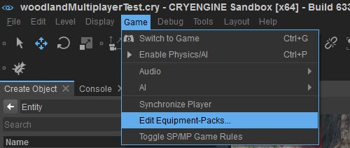
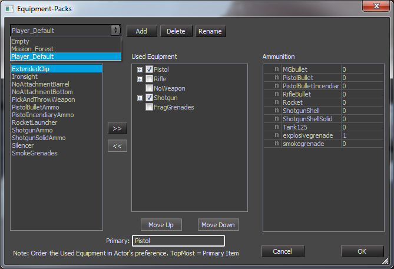
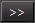
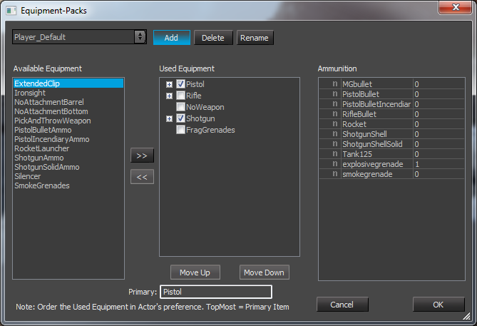
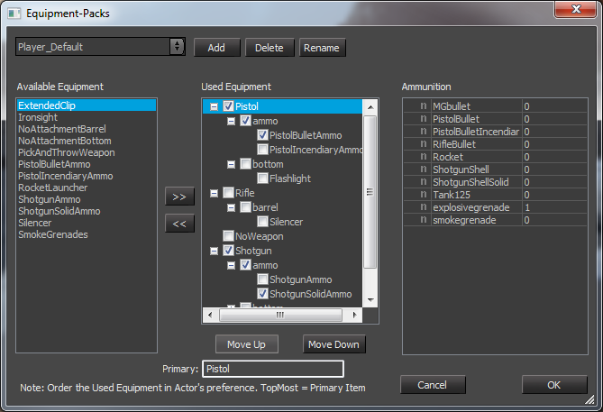
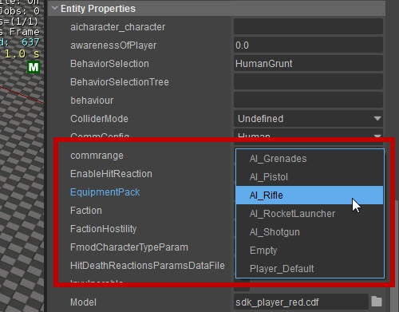
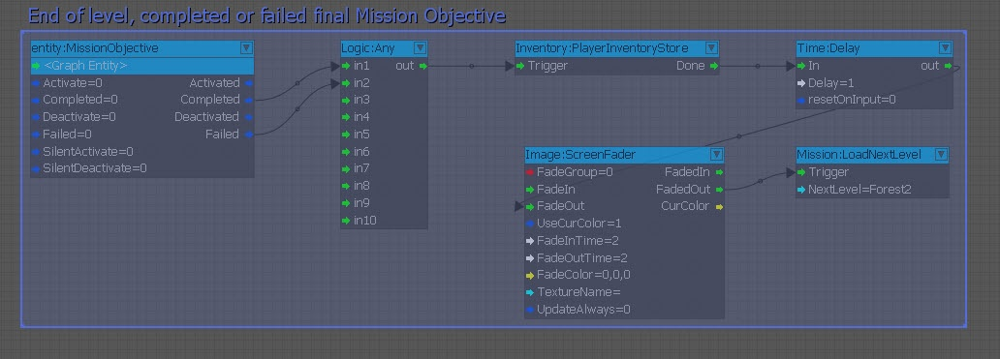
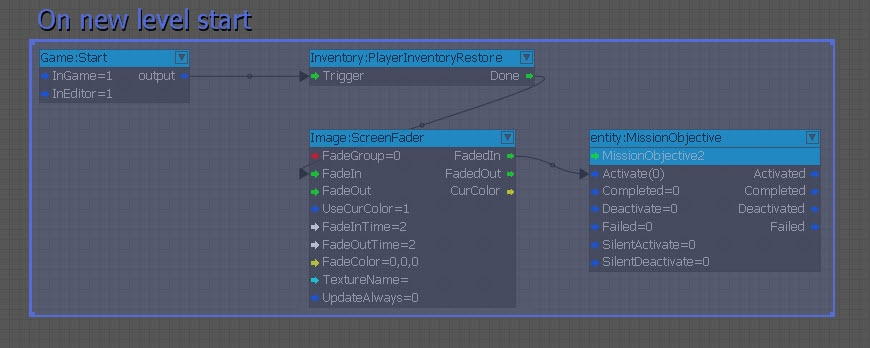
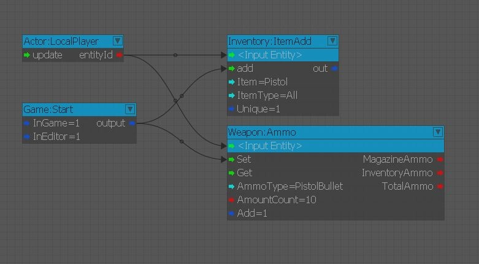

Обзор
После завершения этого руководства вы сможете передавать оружие и снаряжение объектам AI и игроку.
Вы также сможете переносить инвентарь игрока из одной миссии в другую, а также давать игроку определенные предметы в начале уровня.
Главы:
Редактирование пакетов снаряжения
Шаг 1
В меню «Игра» нажмите «Редактировать пакеты снаряжения»:

Рис1: Редактировать пакеты снаряжения
Шаг 2
Используя раскрывающийся список, выберите один из пакетов оборудования:

Рис2: Настройка оборудования
Шаг 3
Затем вы можете добавить оборудование из Доступное оборудование список в Б/у оборудование список или удалите оборудование с помощью кнопки «Добавить». 
По мере добавления/удаления боеприпасов/оружия/аксессуаров из сборки редактор EquipmentPack автоматически уведомляет об изменениях и соответствующим образом обновляет доступное оборудование.
Player_Default загружается по умолчанию, если не указано иное в Flow Graph (Инвентарь:EquipPackAdd).
Или создайте новый пакет, нажав «Добавить»:

Рис.3: Добавление нового пакета с помощью окна «Пакет оборудования».
Настройка аксессуаров
Начиная с CRYENGINE 3.5, инструмент «Пакет снаряжения» также имеет возможность сортировать аксессуары/насадки для оружия.

Рис.4: Сортировка пакетов снаряжения.
В приведенном выше примере вы можете видеть, что несколько аксессуаров отмечены галочкой. Это означает, что они устанавливаются на оружие по умолчанию при загрузке этого пакета снаряжения. Только один аксессуар может быть выбран в качестве стандартного для каждой категории (как определено в сценарии оружия).
Это означает, что пистолет начинается с PistolBulletAmmo, винтовка начинается без аксессуаров, а дробовик начинается с ShotgunSolidAmmo. Если бы мы хотели, чтобы фонарик был на пистолете по умолчанию, мы бы установили флажок рядом с ним в «нижней» категории.
Боеприпасы
Между сценариями оружия и пакетами снаряжения существует довольно большое совпадение, о чем следует помнить. Количество боеприпасов можно определить в Аксессуаре XML, в Оружии XML или в Пакете снаряжения.
Обычно принимается «большее» значение, но оно остается в пределах ограничений. Если ваш максимальный запас боеприпасов для PistolBullet равен 54, а вы поместили 200 в пакет снаряжения, вы все равно получите только 54. Если вы поместите 10 в пакет снаряжения и 12 в сценарий оружия, у вас будет 22 боеприпаса.
AI Пакеты снаряжения
Чтобы назначить конкретный пакет оборудования для AI, просто укажите имя пакета оборудования в EquipmentPack поле свойств AI.
Помните: если вы имеете дело с множеством AI/пакетов оборудования, AI Архетипы сущностей можно использовать.
Вы также можете получить доступ к редактору пакетов оборудования, нажав кнопку EquipmentPack "....Кнопка "в свойствах персонажа с оружием.

Рис5: Назначение пакета оборудования для AI
Обратите внимание, что у AI неограниченное количество боеприпасов, поэтому вам не нужно указывать количество пуль для их пакетов снаряжения.
Сохранение экипировки игроков на нескольких уровнях
В какой-то момент игры вы можете захотеть загрузить новый уровень, но также перенести оружие и предметы игрока на следующий уровень.
На следующем рисунке мы имеем настройку, в которой при завершении или сбое MissionObjective мы сохраним инвентарь игрока, затемним экран и перейдем к следующему уровню.

Рис.6: Пример сохранение инвентаря игрока
Затем, как только следующий уровень будет загружен, мы восстановим сохраненный инвентарь, исчезнем и затем активируем миссию. MissionObjective2.

Рис.7: Изменение инвентаря сохраненного игрока.
Предоставление игроку индивидуального оружия и предметов
Чтобы дать игроку индивидуальное оружие и предметы,
В приведенном ниже примере игрок получит пистолет в начале уровня, а также боеприпасы для пистолета:

Рис8: Предоставление игроку индивидуального оружия и предметов через Узлы инвентаря и оружия.